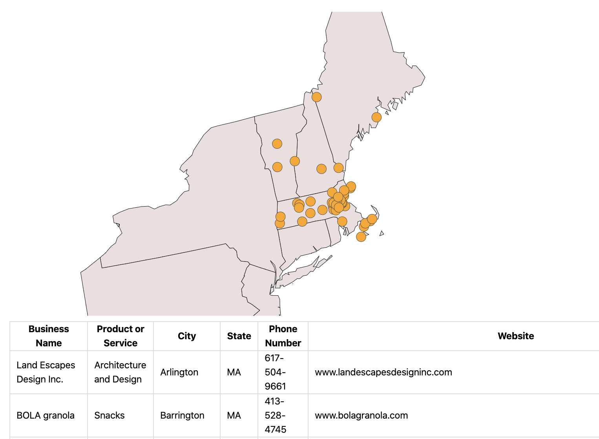
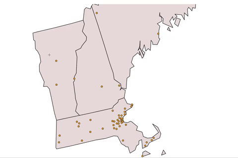
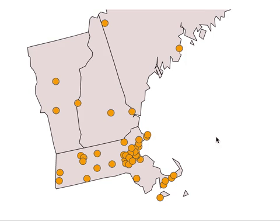
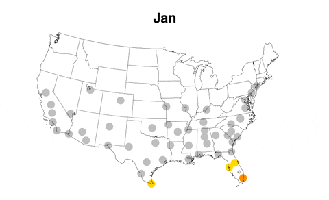

Demo Video
Visualization explanation
One of SBN's core missions is to build a community that can support a culture of sustainability and shopping local. To do this, SBN has a member directory containing information about all buyers, vendors, and other organizations, but they do not have an easy way to look all of their members, especially in regards to their specialty and location.
To accomodate towards SBNs expectation, for our project, we decided to create a visualization that allows viewers to where members are located and what the products/services offered are.
For design justifications please take a look at our Design Process section.
Final visualization screenshot:
For our final visualization we have a table and a map. The full table is not shown here due to limited space.
UI Walkthrough:
-
Our map allows for interactability! Simply highlight the cities on the map by clicking and dragging. Move the box around to select different cities at a time.
 Zoom in and out to see the city plots more clearly. This can be done by scrolling on the map.

Data Analysis
Summary of Data Provided:
The dataset we were provided initially was not easy to work with. There were a few issues:
Once we sat down to clean all the data, we were much happier with the results and finalized the specifics of our visualization.
Data Types
For the dataset we were mainly dealing wih Strings. This was completely based on the data we were provided.
Data Preprocessing
The dataset we were given had the information for a little over 100 members. To make the data usable, we had to clean it up and properly categorize each member organization. This required us to research any gaps in the data (for example, organizations that did not have an address/location in the dataset), as well as to categorize each member based on what they sell or are focused on (catering, beverages, consulting, green energy, etc.)
Task Analysis
Task table
| Index | "Domain" Task | Analytical Task | Search Task | Analyze Task |
|---|---|---|---|---|
| 1. | Seeing the trend of how members have grown consecutively over the years. | Summarize | Lookup | Discover |
| 2. | Analyzing the density of dots on a geographical map will represent the growing number of members over the years | Compare | Lookup | Enjoy |
Summary of task table.
Our original task table had a lot more points, but we feel like in our final visualizations we definitely hit these two tasks from our original plans. Although we couldn't show the trend of growing members over the years due to data limitation, the spread and density of dots across the map represent the growing number of members over the years
Our goal after making this task table was to represent the tasks in a nice, easy to read enough manner. The problems we faced along the way were limitation on available data, coding in D3 experience and time management.
Design Process
Original Idea:
Before we had access to any data, we wanted to make a visualizations of a map that showed the increasing number of businesses each year as plots points on the map. Given below is an example of the visualization we wanted to base it off of.
With time, we realized this would not work for the following reasons:
- The dataset provided did not show the month/year the business joined SBN, to show the progress over time.
- We needed to establish brushing and linking as per project requirements
So, this was scratched, and we went back to the drawing board and came up with the following design.
Final "interactive" sketch made on Tableau:

Our original idea for the map was to not only brush and link between a map and a table, but also allow for more interactability for the user by adding a filter to select by product or service as seen in the screenshot above. The different products/services would be distinguished by color. However, we faced some issues along the way:
- Boston had several different businesses with different products/services. The overlapping colors could be confusing to the eye.
- There were too many categories under products/services, which meant too many unecessary colors on the map.
- We didn't know how to code that in D3!
- Usability testing proved to be confusing for the teams that tested our visualization. Listed below is their specific feedback for the sketch at the time.
- Ensure that zoom feature is enabled to make sure there is no overlap.
- Get rid of outliers like Ohio and New Jersey, since they are not super relevant to your visualization.
- If you do keep the differentiation of products or services by color, make sure to use primary colors since many of the colors look similar and can be confusing.
- Possibly get rid of filter feature completely?
Conclusion
In conclusion, our visualization represents the existing businesses registered with SBN through a map + table. If we had more time, we would definitely implement linking.
In the future, interesting features to add would be:
- To add a tooltip. This way, the cities would be more clearly defined, allowing for clarity and transparency for the user.
- Implement a filter. This would allow the user to filter out cities that are unecessary for their viewing.
Acknowledgments
- D3: Data-Driven Documents by Mike Bostock.
- Pure CSS responsive "Fork me on GitHub" ribbon by Chris Heilmann.
- Zooming on a visualization tutorial by Lukas Vonlanthen.
- Existing code from previous assignments
- Aditeya's office hours code